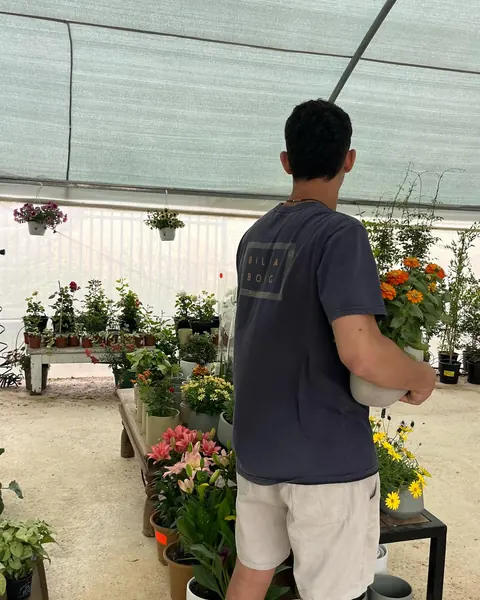

משתלה שכונתית בין גן יבנה לקיבוץ חצור
משתלת המושבה נפתחה באביב 2025 בכניסה לקיבוץ חצור. בחממה, מתחת למטריות הצבעוניות, מחכים פרחי עונה, צמחי בית, סחלבים, קקטוסים ועציצים, והמבחר מתחלף בכל עונה.
לא בטוחים מה לקחת? שואלים, ובמשתלה ישמחו לעזור לבחור. ואחר כך קפה ומאפה בעגלת הקפה אוליבר, שנמצאת ממש ליד.
״בואו למשתלת המושבה, תנו לעצמכם רגע של ירוק.״מתוך האינסטגרם של המשתלה
ככה זה נראה אצלנו
